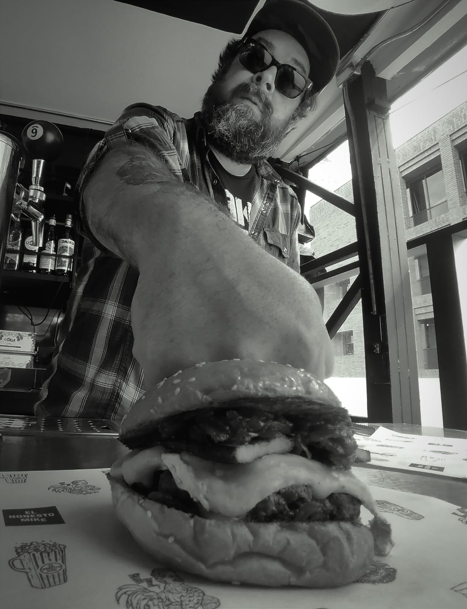
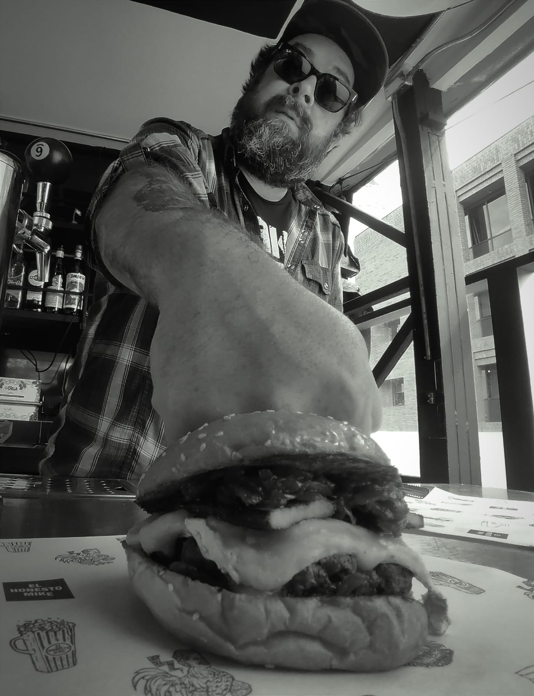

El Honesto Mike
Lideré la concepción y el lanzamiento, desde el menú hasta el branding. Mencionada entre las 50 mejores hamburguesas del mundo. Nada mal.
Detalles del Proyecto
Lideré la concepción y el lanzamiento exitoso de la marca "EL HONESTO MIKE", incluyendo el desarrollo integral del menú y la estrategia de branding, estableciendo un referente en el sector. Dirigí la visión creativa y estratégica para asegurar la coherencia de la marca y la excelencia culinaria.
Reconocimientos y Enlaces:
- Reconocimiento Global: Mencionada entre las 50 mejores hamburguesas del mundo. Ver Ranking
- Apertura y Concepto (Chile Gastronomía): chilegastronomia.cl (Buscar artículo de diciembre de 2017).
- Alianza Beervana y Franklin Burgers (La CAV): cav.cl (Artículo de marzo de 2018).
- Apertura Segunda Sucursal (La Tercera): latercera.com (Artículo de octubre de 2022 sobre la expansión a Lastarria).
- Entrevista con Socio (Commensal and Guest): commensalandguest.com (Artículo de junio de 2025).
- Reseña Sucursal Lastarria (Como Me Gusta): comomegusta.cl (Reseña de abril de 2025).
- Visita de Dexter Holland (TikTok): tiktok.com (Video viral de marzo de 2025).
Galería de Imágenes


 
